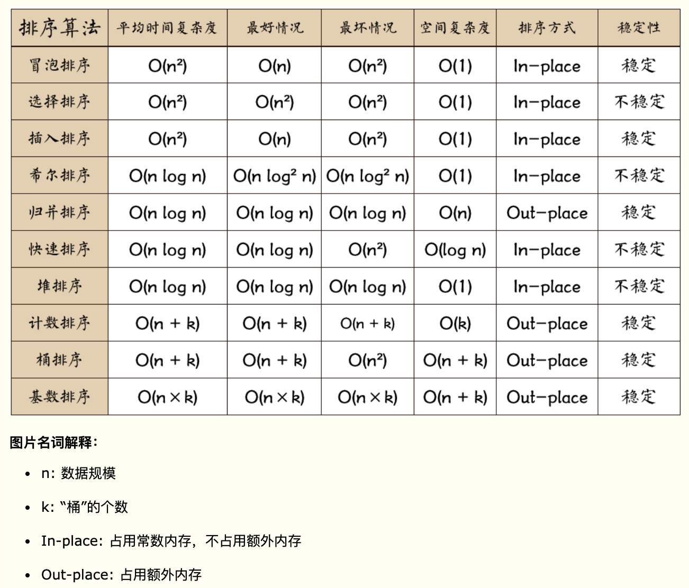
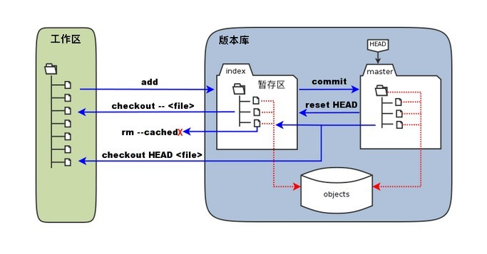

排序相关
先来一波总结

O(nlog2n)
O(n2)
props 是父组件给子组件传值的一种方式，其中可以包括
1 | props: { |
1 | v-html |
casatwy 的博客，看他的博客及网上的相关资料，之前是安居客的架构师，后来去了天猫，但一直没找到他的真实名字，其他人在介绍他的时候也是直接说他的英文名 casatwy，只有一篇博客称呼他为田神，可能是姓田吧，不过这些都不重要，他带给我们 iOS 开发者的技术分享才是最重要的，我们在心中默默的敬佩就好了。因为他之前是架构师，所以他的博客中对于 iOS 的架构设计有很多分享，非常建议大家去看一看。博客中有《iOS 应用架构谈》系列文章。
喵神的博客，为 Swift 技术在国内的推广做了很大贡献。著作有《Swifter-Swift 开发者必备 Tips(第四版)》
虽然在写这篇笔记之前已经用 Git 很长时间了，而且对于一些操作也比较熟悉，但是还是感觉对于 Git 没有进行系统的学习和梳理，这篇笔记的目的其实就是把 Git 相关知识进行系统的梳理一下，让 Git 这个果子在我的技能树上成熟。
在 Git 工作目录下的文件有已跟踪以及未跟踪两种状态，其中未跟踪的文件便是没有被 git 纳入版本控制的文件，而已跟踪的文件肯定就是 git 纳入版本控制的文件了，纳入 git 控制的文件的状态会被分为三种：已提交（committed）、已暂存 (staged)和已暂存 (staged)；那么相对应的 git 便分为工作区、暂存区以及版本库三个部分；

其中 rt.jar 包为所有核心 Java 运行环境的已编译 class 文件的集合;tools.jar 是系统用来编译一个类的时候用到的，即执行 javac 所需要用到的；dt.jar 包是关于运行环境的类库，主要是 swing 包。
1 | # 注意：Xcode 11与Xcode 10环境变量有变化 |